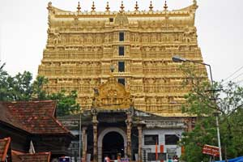
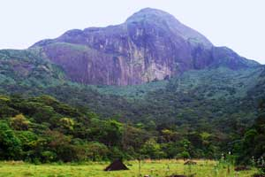
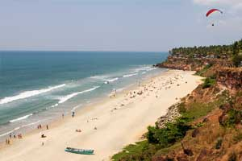

Thiruvananthapuram
Thiruvananthapuram (or Trivandrum) is the capital of the southern Indian state of
Kerala. It's distinguished by its British colonial architecture and many art galleries. It’s also home to
Kuthira Malika (or Puthen Malika) Palace, adorned with carved horses and displaying collections related to
the Travancore royal family, whose regional capital was here from the 18th–20th centuries.
Thiruvananthapuram is a major tourist hub in India. Kovalam and Varkala are popular beach towns near
the city. Other important beaches include Poovar, Shankumugham Beach, Azhimala Beach, Vizhinjam Beach and
Veli Beach. The Padmanabhaswamy Temple located at the heart of the city is known as the richest place of
worship in the world. Other places of interest include Agasthyamala rain forests, Neyyar Wildlife
Sanctuary, Kallar, Braemore, Ponmudi hills, Poovar, Anchuthengu backwaters, Varkala Cliffs and Kappil-Edava
lakes.
The city is also known for its unique style of architecture involving Kerala Architecture with British and
Dravidian influences.[117] Napier museum, Zoo, Padmanabha Swamy temple, Kuthira Malika palace, Kilimanoor
palace and The Trivandrum Golf Club heritage building are examples for this.
Places to Visit in Trivandrum
- Padmanabha Swamy Temple.
- Agasthyakoodam.
- Kuthiramalika (Puthenmalika) Palace Museum.
- Padmanabhapuram Palace.
- Varkala.

Dedicated to Lord Vishnu, the temple is a blend of the Kerala and Dravidian styles of architecture located inside the East Fort. One among rare Vishnu temples in, the presiding deity here is of Lord Vishnu reclining on Anantha the Serpent. The temple is a place for art lovers and is also known for its mural paintings and stone carvings.

Agasthyakoodam is the second highest peak in Kerala and is also a part of Sahyadri range of mountains, at a height of 1890 metres above sea level. Teeming with wildlife, the forests of Agasthyakoodam abound in rare medicinal herbs and plants and brilliantly hued orchids. A bird watchers paradise, this legendary mountain is accessible by foot from Kotoor, near Neyyar Dam, as also from Bonacaud. The season from December to April is advocated for trekking. This peak lies in Thiruvananthapuram district of Kerala, India and is a part of the Agasthyamala Biosphere Reserve, which lies at the border of Kerala and Tamil Nadu. UNESCO has added Agasthyamala Biosphere Reserve to its World Network of Biosphere Reserves in March 2016.

The rare specimen of workmanship in the traditional Travancore style of architecture also known for exquisite wood carvings was built by Maharaja Swathi Thirunal Balarama Varma - the King of Travancore, who was a great poet, musician, social reformer and statesman. The palace museum displays paintings and various priceless collections of the royal family and is located near the Sree Padmanabha Swamy Temple.

The splendid palace is situated at Thuckalai, on the way to Kanyakumari which once the seat of the erstwhile rulers of Travancore. This is a well preserved wooden palace, a glorious testimony to the traditional Kerala School of architecture. The extraordinary murals, exquisite floral carvings and the black glossy granite floor have withstood the test of time. This palace is one of the largest wooden palaces in India and its mostly made out of Rose and Teak Wood. Owned and maintained by the Government of Kerala, this palace is at a distance of 50 kilometers from Thiruvananthapuram city and 20 kilometers from Nagercoil. The palace is located at the foothills of the Veli Hills of the Western Ghats.

Varkala is a land of seaside resort and spa. It is also an important Hindu centre of pilgrimage. The final resting place of the great social reformer, Sree Narayana Guru, is near Varkala, atop a hill called Sivagiri. High cliffs with mineral springs rise majestically from the coastline. According to a myth, sage Narada was approached by a group of mendicants who confessed to having sinned. Narada threw his valkkalam(cloth made of the bark of a tree) into the air, and the place where it landed was subsequently named Varkala. The mendicants were directed by Narada to offer their prayers in the newly created place by the seashore. The place where they prayed for redemption, came to be known as the Papanasham Beach ( Papanasham means redemption from sins). The 2000 year old Sree Janardhana Swamy Temple and the Nature Care Centre are the two main attractions here.